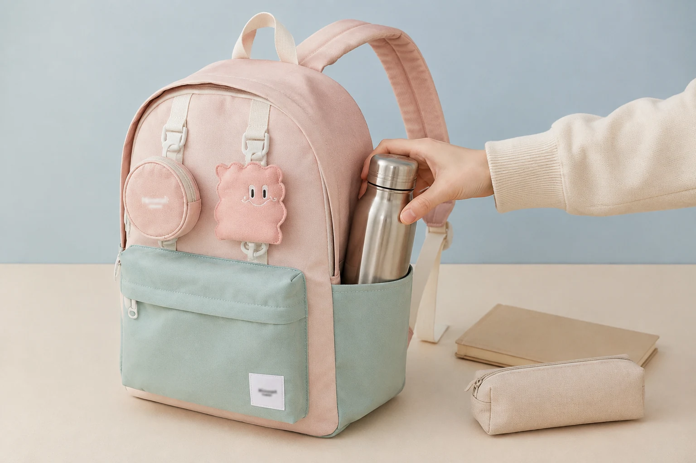

물병 수납 백팩 고르기: 분리해서 안전하게 담는 점검표

물병을 매일 챙긴다면 백팩의 전체 용량보다 물병을 어디에, 어떤 방향으로 둘 수 있는지가 더 중요할 수 있습니다. 겉보기에는 비슷한 옆주머니도 깊이와 입구, 원단의 늘어나는 정도가 달라 실제 물병과 맞지 않을 수 있습니다. 사용하는 물병을 직접 재고 전자기기와 분리되는 동선까지 확인해 보세요.
용량 대신 지름과 높이를 먼저 재세요
500mL처럼 같은 용량으로 표시된 물병도 몸통의 지름과 뚜껑 모양은 서로 다릅니다. 자주 쓰는 물병의 가장 넓은 부분과 전체 높이를 재어 제품 정보의 포켓 크기와 비교하세요. 손잡이나 빨대 뚜껑이 튀어나온 제품은 포켓 입구에 걸리지 않는지도 확인해야 합니다.
- 물병 몸통의 가장 넓은 지름
- 바닥부터 뚜껑 끝까지의 높이
- 손잡이와 덮개를 포함한 전체 폭
- 물을 채웠을 때 한 손으로 넣고 뺄 수 있는 무게인지
포켓의 깊이와 입구를 함께 보세요
포켓이 깊어도 입구가 지나치게 넓으면 이동 중 물병이 흔들릴 수 있고, 너무 좁으면 원단과 봉제선에 무리가 갈 수 있습니다. 고무 밴드나 조임 장치가 있다면 실제 물병을 넣었을 때 과하게 눌리지 않으면서 잡아주는지 살펴보세요. 포켓 소재가 늘어나는지는 제품 설명에 표시된 정보만 기준으로 판단합니다.
전자기기와 종이류에서 분리하세요
어떤 물병도 뚜껑이 느슨하거나 충격을 받으면 내용물이 샐 가능성을 완전히 없앨 수 없습니다. 가방에 넣기 전 뚜껑을 닫아 뒤집어 확인하고, 노트북과 서류는 물병과 다른 칸에 둡니다. 외부 포켓이 맞지 않아 안쪽에 넣어야 한다면 세워 둘 수 있는 자리와 별도 방수 파우치를 함께 검토하세요.
가방 안쪽 벽에 맺힌 물방울이나 물병 겉면의 결로도 종이를 젖게 할 수 있습니다. 차가운 음료를 넣은 날에는 마른 천을 함께 챙기고, 도착한 뒤 물병 주변을 확인하는 습관이 도움이 됩니다.
꺼내는 동선은 멈춘 상태에서 시험하세요
물병이 쉽게 닿는 위치에 있어도 걷거나 자전거를 타는 중에 꺼내는 행동은 피하고, 안전하게 멈춘 상태에서 사용하세요. 가방을 벗지 않고 꺼내고 싶다면 팔이 자연스럽게 닿는지 빈 물병으로 먼저 확인합니다. 무리하게 팔을 비틀어야 한다면 가방을 내려놓고 꺼내는 편이 낫습니다.
사용 후에는 포켓 바닥까지 확인하세요
물방울이나 음료가 묻었다면 물병을 빼고 포켓 안쪽을 마른 천으로 닦은 뒤 충분히 말립니다. 세정제나 물세탁 가능 여부는 소재마다 다르므로 제품 관리 안내를 따르세요. 젖은 채로 물병을 계속 넣어 두지 말고, 냄새나 오염이 남아 있으면 사용을 멈추고 상태를 점검합니다.
구매 전 물병 수납 점검표
- 내 물병의 지름과 높이를 실제로 쟀나요?
- 포켓 깊이와 입구가 물병 모양에 맞나요?
- 물을 채운 상태에서도 포켓이 안정적으로 받치나요?
- 노트북과 서류를 다른 칸에 둘 수 있나요?
- 포켓 안쪽을 닦고 말리기 쉬운 구조인가요?
물병뿐 아니라 충전기와 노트처럼 매일 드는 물건의 자리도 함께 정해야 합니다. 백팩 수납 루틴으로 짐을 정리한 뒤 Himawari 제품 목록에서 제품별 안쪽과 옆면 사진을 비교해 보세요.
참고·안내
자주 묻는 질문
물병 포켓은 깊을수록 좋은가요?
깊이만으로 판단하기보다 물병 높이와 지름, 포켓 입구의 고정 방식까지 함께 봐야 합니다. 넣고 뺄 수 있으면서 이동할 때 쉽게 빠지지 않는지 확인하세요.
물병을 가방 안쪽에 넣어도 되나요?
제품 구조와 물병 밀폐 상태에 따라 달라집니다. 안쪽에 넣는다면 뚜껑을 확인하고 전자기기·종이류와 분리된 자리나 별도 파우치를 이용하세요.
물병 용량만 알면 포켓 크기를 고를 수 있나요?
같은 용량도 몸통 지름과 뚜껑 모양이 다릅니다. 실제 물병의 가장 넓은 지름과 전체 높이를 재어 포켓 정보와 비교하는 편이 정확합니다.